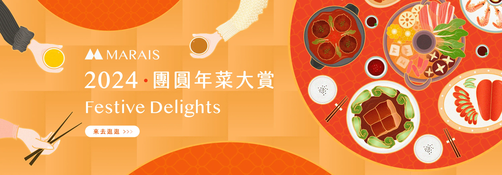

農曆春節是食品電商的兵家必爭之地。「團圓年菜大賞」以豐盛的年菜插畫傳達圍爐團圓的溫度，把「買年菜」的功能訴求包裝成有情感、有記憶點的節慶主視覺。
從主視覺延伸到各版位的促購素材，在傳遞節慶溫度的同時，也讓年菜的賣點與優惠訊息清楚易讀，兼顧氛圍與轉換。
廣告素材
延伸到社群的多版位廣告，搭配檔期節奏投放。



農曆春節是食品電商的兵家必爭之地。「團圓年菜大賞」以豐盛的年菜插畫傳達圍爐團圓的溫度，把「買年菜」的功能訴求包裝成有情感、有記憶點的節慶主視覺。
從主視覺延伸到各版位的促購素材，在傳遞節慶溫度的同時，也讓年菜的賣點與優惠訊息清楚易讀，兼顧氛圍與轉換。
延伸到社群的多版位廣告，搭配檔期節奏投放。